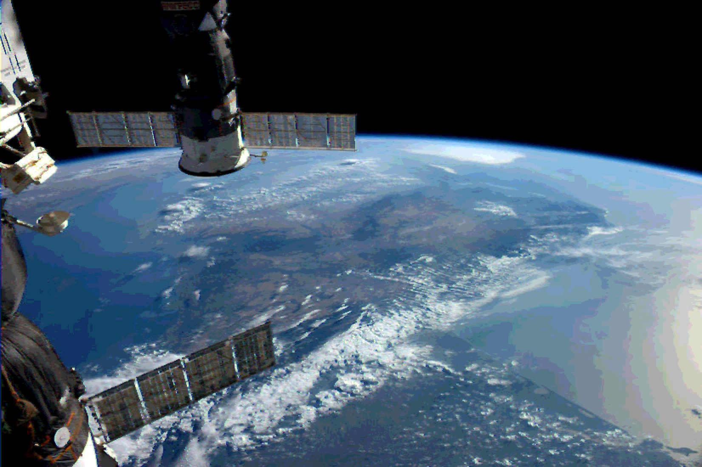

Kerbal Space Program
Kerbal Space Program (KSP) je simulacija svemirskog programa koju je razvila meksička kompanija Squad, a kasnije je podršku preuzeo Private Division. U igri, igrači upravljaju sopstvenim svemirskim programom na izmišljenoj planeti Kerbin, koristeći simpatična bića po imenu Kerbali. Glavni cilj je da se dizajniraju, konstrušu i lansiraju rakete i svemirske letelice koje mogu da istražuju svemir, slete na druge planete, i uspešno se vrate nazad — sve u skladu sa realnim zakonima fizike, kao što su aerodinamika i orbitalna mehanika. Iako izgleda zabavno i šašavo, igra je poznata po svojoj dubokoj i ozbiljnoj naučnoj osnovi, što je čini edukativnom, ali i izazovnom. KSP je stekao ogromnu bazu obožavalaca, uključujući i prave naučnike i astronaute, zbog svoje sposobnosti da zabavno predstavi kompleksnost svemirskog istraživanja.